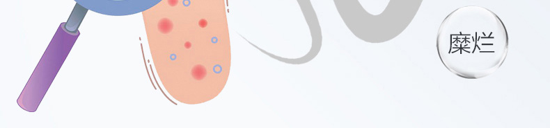
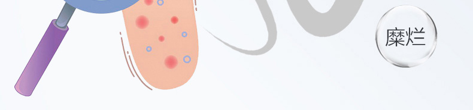
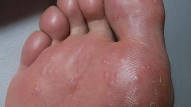
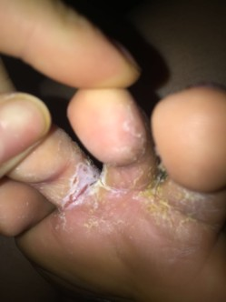
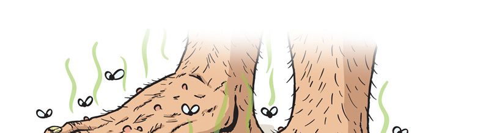

认识脚气
脚气是人们生活中常见的，是由真菌引起的皮肤廯，具有传染性。一旦发作，使人往往感到奇痒难忍，脚趾间出现红斑、脱屑，情况严重的患者整个脚底都会发红、脱皮并产生很重的脚臭味，因此脚气严重影响患者日常的工作和生活。


 



脚气的发作与饮食（肥甘味厚）、体质（肥胖、敏感体质、免疫力低下）、生活习惯（不讲究个人卫生）都有关。
根据临床表现，脚气可分为以下3种：

多发生在夏季，表现为趾间、足缘、足底出现米粒大小，深在性水疱，疏散或成群分布，疱壁较厚，内容清澈，不易破裂，相互融合形成多房性水疱，撕去疱壁，可见蜂窝状基底及鲜红色糜烂面，剧烈瘙痒。

表现为局部表皮角质层浸软发白。由于走动时不断摩擦表皮脱落，露出鲜红色糜烂面；严重者趾缝间、趾腹与足底交界处皮肤均可累及，瘙痒剧烈，多发于第3、4、5趾缝间。常见于多汗者。

情况是足跖、足缘、足跟部皮肤脚趾增厚、粗糙、脱屑，鳞屑成片状或小点状，反复脱落。
看完这些，相信大家对脚气也有了更深入的了解，脚气有那些危害，该怎么确认自己有没有得脚气，大家可以加李老师微信： （←长按可复制） ,平时有问题随时咨询，朋友圈图片案例参考等，她会给到你全面的解答，下面也给大家分享下脚气的常识，希望能够帮到正被脚气困扰的您。
足癣是由致病性真菌引起的足部皮肤病，具有传染性。足癣在全世界广为流行，在热带和亚热带地区更为普遍。在我国，足癣的发病率也相当高。人的足底和趾间没有皮脂腺，从而缺乏抑制皮肤丝状真菌的脂肪酸，生理防御机能较差，而这些部位的皮肤汗腺却很丰富，出汗比较多，加之空气流通性差、局部潮湿温暖，有利于丝状真菌的生长。此外，足底部位皮肤角质层较厚，角质层中的角蛋白是真菌的丰富营养物质，有利于真菌的生长。

有的人还会去尝试擦达克灵也起不到任何作用， 还有的会去市里正规的地方，开了各种吃的和抹的剂型，花费不少钱，用后，有点点作用，不用，继续发作，期间由于痒的难受 经常不停地用手去抠， 导致手上也感染上了手藓，脚气虽然难受但不会影响工作，可是手藓的情况会严重的影响到日常工作和生活了，手藓脱皮起小红疙瘩，像是过敏一样。



机会
如果你觉得自己尝试各种方法，都没有祛除，那肯定没有找对脚气类型和对应方法，切记：只有找到脚气是属于什么类型，才能快速实现杀灭真菌。还在苦苦寻找方法的你们，可以咨询下专业祛除脚气，（加李老师微信号是： )
脚气好了后要注意日常的预防
重要的事情说三遍
后面陆陆续续有网友找我问专业祛除脚气的加李老师微信号，我最后说一次吧：
专业祛除脚气加李老师微信号： （←长按可复制）